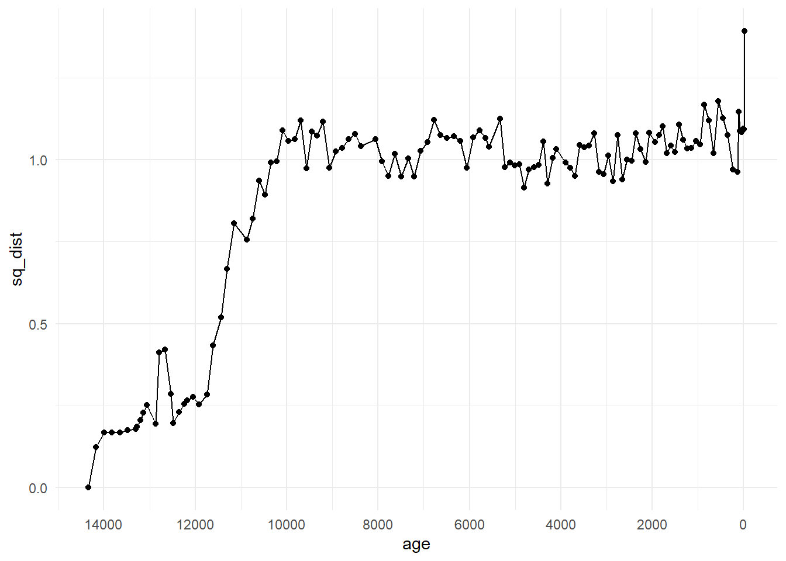

# Load up the package
if (!require("pacman")) install.packages("pacman", repos="http://cran.r-project.org")
pacman::p_load(tidyr, dplyr, ggplot2, neotoma2, analogue, vegan)6 Dissimilarity
6.1 Part 1: Background
There are multiple methods of describing palaeoecological data in terms of species communities. Older, but still valid, methods include CONISS (Grimm 1987), more modern methods include machine learning methods such as boosted regression trees (Elith, Leathwick, and Hastie 2008; Simpson and Birks 2012), and latent dirichlet allocation (Blei and Lafferty 2007; Blei 2012). Here, we are going to look at a measure of dissimilarity, the squared chord distance, of successive samples through time. That is, a measure of how similar/dissimilar a community at time \(t\) is to the community at \(t_{+1}\).
Packages required for this section
For most of the rest of this workbook we will be using the Devil’s Lake dataset downloaded in Chapter 4. We’ve included a catch-up block of code that downloads and formats the data so that this section can be run independently of Chapter 4.
Respawn code
The following code recreates the necessary formatted data from Devil’s Lake using the neotoma2 package. We have also provided this dataset as an .rds file in the data directory, it is preferable to read the dataset avoid repeated API calls. the following code is included so that you can manipulate the inputs (e.g., sideid = and harmonising taxa) and object name to download and experiment with different datasets.
# The following code can be done in one pipeline but we have split it into chunks to help with readablity
devils_samples <- get_sites(siteid = 666) %>% # Download the site samples data
get_downloads() %>%
samples()
devils_samples <- devils_samples %>%+
dplyr::filter(ecologicalgroup %in% c("UPHE", "TRSH"), # Filter ecological groups by upland heath and trees and shrubs
elementtype == "pollen", # filter bu pollen samples
units == "NISP") %>% # Filter by sampling unit
mutate(variablename = replace(variablename,
stringr::str_detect(variablename, "Pinus.*"), # Harmonize Pinus into one group
"Pinus")) %>%
group_by(siteid, sitename,
sampleid, variablename, units, age,
agetype, depth, datasetid,
long, lat) %>%
summarise(value = sum(value), .groups='keep') # The group_by function will drop columns not used as grouping variables
devils_samples <- devils_samples %>% # Calculate proportions of each species by year group
group_by(age) %>%
mutate(pollencount = sum(value, na.rm = TRUE)) %>%
group_by(variablename) %>%
mutate(prop = value / pollencount) %>%
arrange(desc(age)) %>%
ungroup()
saveRDS(devils_samples, "./data/devils_samples.rds") # Save the data for laterThe following code reads-in the Devil’s Lake data provided in the data directory. Sometimes minor mistakes along the way lead to errors, so you can always come back here and read in the formatted data again.
# Load up the data
devils_samples <- readRDS("./data/devils_samples.rds")The data are in long format as a tibble, i.e., similar to a dataframe. This format can be great for data wrangling and plotting; however, many analyses require a specific input such as a (wide) site-by-species matrix. It is important to be comfotable with pivoting data between long and wide formats and converting between dataframes/tibbles and matrices. Remember, that unlike dataframes and tibbles, matrices cannot be of mixed type (e.g., strings and numbers).
Oh no! Common sources of error (and anxiety‚Ķ) üò±
If a numeric matrix is required as the input make sure the data have not been converted to strings. R will coerce numbers to characters if there is a character (like a nameing column) in the matrix. This coersion can go unnoticed when converting from a dataframe to a matrix.
string_matrix <- matrix(c("1", 2:10), nrow = 2) # see the numbers are in quotes indicating a string?
str(string_matrix) # Check the structure chr [1:2, 1:5] "1" "2" "3" "4" "5" "6" "7" "8" "9" "10"Numeric matrix:
numeric_matrix <- matrix(1:10, nrow = 2) # see the numbers are in quotes indicating a string?
str(numeric_matrix) # Check the structure int [1:2, 1:5] 1 2 3 4 5 6 7 8 9 10Matrices can have names (e.g., species names) as column names and maintain a numeric structure, for example: colnames(numeric_matrix) <- LETTERS[1:5].
The analogue package provides several distance measures that can be calculated for site-by-species matrices. So let’s pivot our data to wide format and convert it to a numeric matrix. This can be done in several ways in R, for consistency’s sake we’ll use tidyr:
devils_samples_wide <- devils_samples %>%
tidyr::pivot_wider(id_cols = c(age, depth),
names_from = variablename,
values_from = prop,
values_fill = 0) %>% # Replace NA with 0 (see note below)
as.matrix()
# Some species were not recorded at certain depths (e.g., Acer at depth 603)
# one must be careful when replacing NA with 0 as 'not observed' is different to a measurement of 0
# in this case we can safely say that the proportion of Acer was 0 at a depth of 603
devils_ad <- devils_samples_wide[ , c(1:2)] # store the ages and depths separately
devils_samples_wide <- devils_samples_wide[ , -c(1:2)] # drop ages and depth as they are not included in the distance calculations
devils_names <- colnames(devils_samples_wide)Now we have our data in the correct format to do the distance calculation. Note that time is not included as part of the calculation. The age and depth columns have been stored in a separate matrix devils_ad, and the suqared chord distance will be calculated on the species community matix devils_samples_wide.
# Here we use method = "SQchord", see other available methods with ?distance
devils_sqdist <- analogue::distance(devils_samples_wide, method = "SQchord") 1 2 3 4 5
1 0.0000000 0.12303375 0.16807049 0.16763911 0.16863865
2 0.1230338 0.00000000 0.09150351 0.06611174 0.10351145
3 0.1680705 0.09150351 0.00000000 0.12078176 0.07946106
4 0.1676391 0.06611174 0.12078176 0.00000000 0.10291118
5 0.1686386 0.10351145 0.07946106 0.10291118 0.00000000The distance function has returned a maxtrix of 123, 123 dimensions. Note that the input dimensions were 123, 51. The function has calculated the distance between all pairwise samples,that is, every combination of 1 to \(n\) samples. The diagonal of the matrix is each sample compared with itself and has values of zero. The upper and lower halves of the matrix mirror each other.
we can pick an origin from which to compare change, if we use the top of the core, the most recent section, as our origin and we can look at the distance of each following sample from the present. This will be the first column (or row) of the matrix devils_sqdist, so let’s bind the first column with our stored ages and depths, and plot distance over time.
origin_top <- cbind(devils_ad, sq_dist = devils_sqdist[ ,1])plot(origin_top[ ,"age"], origin_top[ ,"sq_dist"], xlim = c(max(origin_top[ ,"age"]), min(origin_top[ ,"age"])))
We can see from this plot that the community changed substantially in Devil’s Lake from the origin point of the community at the most recent core section. However, plotting the distances with the original time column is not a time series analysis and does not take into account structural processes or autocorrelation. As an exploratory method, it shows us patterns that may be of interest to investigate further.
Some consiterations of this method are:
- it does not take into account time intervals or chronological uncertainty. Palaeoecological data are typically unevenly spaced through time and we may not be calculating the distance across communities evenly through time. See the age column in the data!
- time averaging is not taken into consideration. Time averaging is the amount of time a sample (i.e., a 1-centemetre thick slice of sediment core) encompasses, and due to variable sedimentation rates and compression, the number of years inntegrated within each sample may vary. Thus, we may be calculating the dissimilarity between say 50-years worth of ecological productivity and turnover in one sample, with 10-years in the previous one.
Squared chord distance is one of many measures of dissimilarity, and is not necessarily the best for a given dataset (see Simpson (2007)). The documentation of the distance function (accessed by ?distance). The vegan package also includes functions for calculating distance, and provides many useful references in the documentation of the function vegdist.
6.2 Part 2: Exercises
Plot diagonal elements offset by 1?